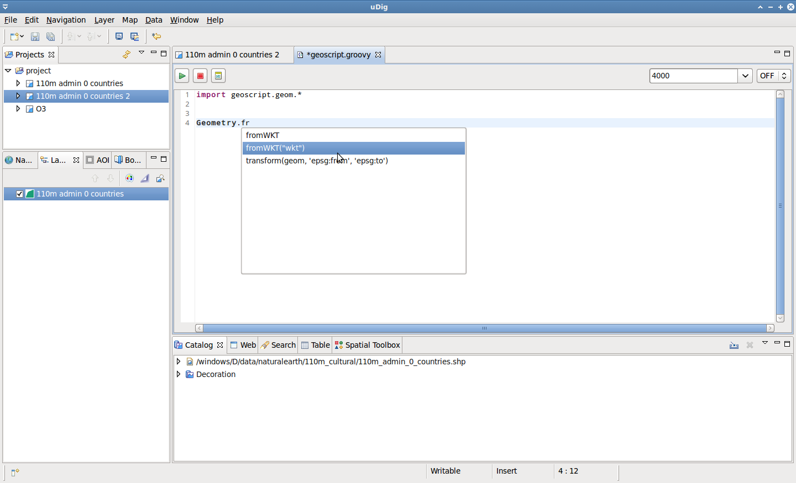

GeoScript Introduction¶
Scripting is one of the powerful things in GIS. Non developers have the possibility to automate common tasks.
The geoscript scripting engine can be used from within uDig to do geo-scripting.
Related reference
Open the GeoScript editor¶
Two icons can be used to open the scripting editor: one for creating a new empty script and one to open an existing script.

Let’s create a new one. The you will be prompted to save the new script to file and an empty editor is opened.

There are a few tool inside the editor, needed to start and stop scripts, or set the heap memory allowed to be used by a script or enable logging.
Using the editor¶
With the editor open you are free to script away, with command completion and syntax coloring as described below.
Inside the editor command completion is available for common geoscript objects.
Type the following into your editor:
import geoscript.geom.* Geo
Select Geometry from the list of suggestions and press Enter to activate command completion.

Command completion is also available for methods.
Continue to type the following into your editor:
import geoscript.geom.* Geometry.fr
Select the from WKT method from the list of selection and press Enter.
When using command completion:
- the first completion proposals that start with the inserted text are suggested
- next the suggestions that simply contain the text
While using the editor Syntax coloring is used to highlight keywords and improve readability.
Complete your script with the following:
import geoscript.geom.* poly4 = Geometry.fromWKT("POLYGON ((0 0, 8 0, 8 8, 0 8, 0 0))") poly5 = Geometry.fromWKT("POLYGON ((5 5, 13 5, 13 13, 5 13, 5 5))") poly6 = poly4.intersection(poly5) println "Intersection: " + poly 6You can use Syntax coloring as visual feedback while typing to double check your script for typos.
Run your script¶
Once you have completed your script, push the Start button.
The script will be run through the Spatial Toolbox engine and the output displayed in the Console view.
The script creates two polygons, and generates their intersection.

Import common modules¶
Geoscript needs you to define the modules you want to use in your script through the import directive, which is usually placed at the top of the script.
Try and plot the result by adding the following to your script:
import geoscript.geom.* poly4 = Geometry.fromWKT("POLYGON ((0 0, 8 0, 8 8, 0 8, 0 0))") poly5 = Geometry.fromWKT("POLYGON ((5 5, 13 5, 13 13, 5 13, 5 5))") poly6 = poly4.intersection(poly5) println "Intersection: " + poly 6 Plot.plot([poly6,poly5,poly4])Press Start to try out this change.
It will fail, because the plot module was not imported:

The editor supplies a quick way to import the most common modules, which can be useful when starting with the scripting as way to learn what modules are available.
Push the Import button at the right of the Stop button and the imports are added to the top of your script.
Press Start to try your script again now that it includes the Plot import.

Geoscript Tutorials¶
The GeoScript Project allows for some fun, the best way to get into it is to start from the web site tutorial page:
Just to add one more complex example, lets see a script that can render a map, properly styled, to an image: